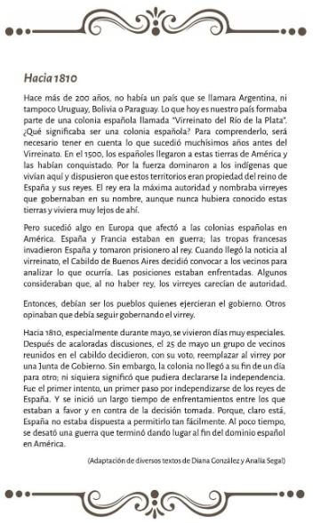
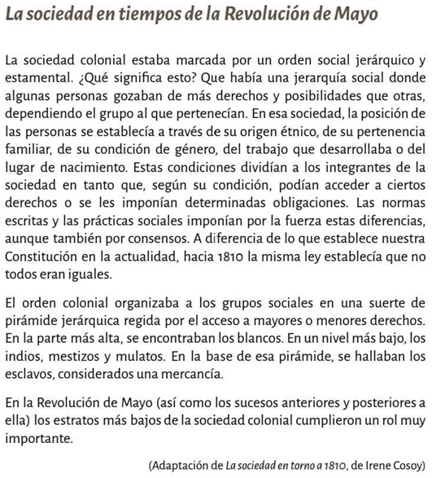
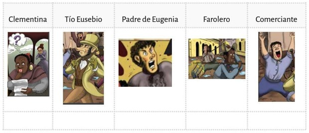

Colaboradores: Nahiara y Jazmín
19 de abril (19/4)
Descargar .docx (Archivo Word)19 de abril, Día del aborigen americano
El 19 de abril de 1940, en México, un descendiente de aborígenes que llegó a presidente, Lázaro Cárdenas, decidió convocar a un congreso de las comunidades de américa con el objetivo de salvaguardar y perpetuar las culturas aborígenes de todo el continente. Participaron indígenas representantes de poblaciones autóctonas de diversas regiones de américa y se trató sobre la situación social y económica de estos pueblos. De sus problemas y sus necesidades.
Desde entonces, el continente americano celebra esta fecha como el día del aborigen americano en recuerdo de quienes habitaron originariamente este territorio, imprimiendo así las primeras esencias culturales.
Los pueblos originarios de hoy ya no pretenden privilegios por si condición de primeros habitantes del continente, solo aspiran a que se los trate como iguales y que se le reconozcan sus derechos.
Desde nuestro lugar, nos cabe como mínimo respetarlos, valorar su cultura, sus valores, sus tradiciones y aprender de ellos, que supieron mantener el legado de sus antepasados durante siglos, y que aman y respetan a la madre tierra como si infinita benefactora.
LEYENDAS:
Las leyendas portan los modos de sentir y pensar de los pueblos y son transmitidas oralmente de generación en generación.
A través de estas narraciones los pueblos aborígenes explican las características del ambiente donde viven, el origen de los nombres que designan particularidades del paisaje geográfico, las causas que dan forma y descripción a los animales y a las plantas, a los fenómenos naturales y hasta a las estrellas y el universo. Son relatos que dan cuenta del origen de las creencias religiosas y de los conocimientos ancestrales.
LEYENDAS ARGENTINAS:
Las leyendas de nuestro país documentan la identidad cultural de los pueblos aborígenes que habitaron el territorio argentino.
• Investigamos sobre los distintos pueblos originarios a partir de sus leyendas.
• Hacemos un recorrido imaginario por nuestro país, escuchando leyendas argentinas que hacen referencia y representan a cada uno de sus pueblos y culturas.
• Registramos en un cuadro.

3 de mayo (3/5)
Descargar .docx (Archivo Word)Día del trabajador, la lucha por los derechos laborales.
Escuchamos un texto y respondemos:
1) ¿Por qué se eligió esta fecha para conmemorar el día internacional de los trabajadores y las trabajadoras?
2) ¿Qué reclamaban los obreros norteamericanos en 1886?
3) ¿Qué sucedió con dichas protestas?
4) ¿Por qué resulta importante que quienes trabajan se organicen y reclamen por mejores condiciones laborales?
5) ¿Eran iguales las condiciones laborales de aquella época a las de hoy?
6) ¿Qué derechos han conquistado las personas trabajadoras a lo largo de la historia?
21 de mayo (21/5)
Descargar .docx (Archivo Word)25 de mayo, aniversario de la revolución de mayo
Lean el siguiente texto:

En el texto anterior se relatan algunos de los principales sucesos ocurridos el 25 de mayo.
- Luego de haber leído el texto, elaboren una infografía o gráfico utilizando esa información.
- Recorten cuadraditos de papel de colores.
- Anoten en los cuadraditos algunas de las ideas del texto que les gustaría incluir.
- En otros cuadraditos pueden dibujar o pegar imágenes.
- Cada ilustración puede ir acompañada de palabras o frases.
- Utilicen flechas para indicar relaciones entre los distintos elementos.
24 de mayo (24/5) -Hecho por Nahiara
Descargar .docx (Archivo Word)Descargar "Anochecer de un día agitado" (Archivo PDF)
Una vuelta por la historia
Leemos "Anochecer de un día agitado ", de Diana González y escuchamos el
audio-cuento.
- Para analizar y reflexionar
1) Hagan una lista con los personajes que se nombran en el cuento.
2) ¿A que posiciones se vinculan a Eusebio y al padre, al que llaman Tatita?
27 de mayo (27/5) -Hecho por Jazmín
Descargar .docx (Archivo Word)Una Sociedad muy desigual
En la actividad anterior hicieron una lista de los personajes que aparecen en el cuento. Lean el siguiente texto en el que podrán conocer como estaba organizada la sociedad colonial al momento de Ia revolución de mayo.

Para analizar
1) Una vez que hayan terminado de leer el texto, dibujen una pirámide en sus carpetas y completen con los diferentes estamentos sociales que se mencionan en "La sociedad en tiempos de la revolución de mayo". Blanco Españoles — Blancos Criollos — Mulatos, Mestizos, Indígenas — Negros.
2) Ahora, asignen a cada personaje el estrato social.

5 de junio (5/6)
Descargar .docx (Archivo Word)5 de junio, día mundial del medio ambiente
Las naciones unidas designaron el 5 de junio cómo “Día mundial del medio ambiente” para destacar que la protección y la salud del medio ambiente son cuestiones importantes que impactan sobre el bienestar de los pueblos y el desarrollo económico.
*Dejar 6 renglones para pegar una fotocopia*
14 de junio (14/6)
Descargar .docx (Archivo Word)17 de junio, paso a la inmortalidad del general don Martín Miguel de Güemes
Martín Miguel Juan de Mata Güemes nació en Salta el 8 de febrero de 1785. Tuvo un rol muy importante como gobernador de su provincia natal entre 1815 y 1821 y como militar durante la revolución rioplatense y las guerras de independencia en el norte del actual territorio argentino. Falleció el 17 de junio de 1821 a causa de una herida de bala producida por los realistas.
En conmemoración de su fallecimiento, en 1999 se estableció el 17 de junio como “Día nacional de la libertad latinoamericana”.
• ¿Quién fue Martín Miguel de Güemes?
*Deja espacio para responder*
• Escuchamos a la historiadora Sara Mata donde cuenta quién fue Güemes y cuál fue su participación en las luchas por la independencia.
• Hacemos una toma de notas.
Respondan:
1 A) ¿Cuál fue la participación de Güemes durante las guerras de independencia?
1 B) ¿Cuál fue la contribución histórica de los denominados “Gauchos de Güemes” al proceso independentista?
1 C) ¿Cuál fue la particularidad de la guerra gaucha?
1 D) ¿Cómo participaron las mujeres en esta singular organización militar?
Mujeres de la independencia
• Escuchamos una entrevista de la investigadora Isabel Zacca, licenciada en historia y directora del museo Güemes de la provincia de Salta: En su relato se destaca la memoria de Macacha Güemes.
2 A) ¿Quién fue Macacha?
2 B) ¿Cuándo y dónde vivió?
2 C) ¿Qué rol cumplió en las luchas por la independencia?
2 D) ¿A lo largo de su vida, cuál fue si participación política en la provincia de Salta?
2 E) ¿Qué dicen los relatos de la época sobre ella?
18 de junio (18/6)
Descargar .docx (Archivo Word) Los símbolos nacionales que nos identifican hasta hoy
• La escarapela, que había sido aprobada por el triunvirato, permitía distinguir las tropas revolucionarias de las realistas, que usaban un distintivo de color rojo.
• La bandera creada por Belgrano a partir de los colores de la escarapela, se utilizaba como estandarte para los ejércitos.
• El escudo tuvo su origen en el sello que usó la asamblea del año XIII para identificar sus documentos, se empleó en el cuño de las primeras monedas criollas.
• El himno, en ocasión de las fiestas cívicas, para entornar alrededor de la pirámide en la plaza de la victoria, actual Plaza de Mayo.
Respondan:
1) ¿Qué se conmemora el 20 de junio?
2) ¿Quién fue Manuel Belgrano y qué lo relaciona con esta fecha?
3) ¿Qué significación tiene para ustedes nuestra bandera?
4) ¿Fue siempre la misma? ¿Tuvo siempre los mismos colores y diseños? Investiguen.
5) ¿De quién habrán sido las manos que confeccionaron la bandera pensada por Belgrano? Busquen información.
4 de julio (4/7)
Descargar .docx (Archivo Word) 9 de julio, día de la independencia
En 1816, en una amplia casa de la ciudad de Tucumán, los diputados representantes de diversas regiones de las provincias unidas del río de la plata, declararon la independencia de la que actualmente, después de largas luchas, discusiones y acuerdos, es la república argentina, nuestra patria.
• Leemos el siguiente texto:
*Dejar 15 renglones para pegar una fotocopia*
- ¿Qué ocurrió el 9 de julio de 1816?
- ¿Qué es la independencia para ustedes?
- ¿Qué significa que un pueblo sea libre?
• Pueden escribir, dibujar o hacer un afiche expresando que significa para ustedes ser libres.
• Observen la siguiente imagen:
*Dejar 10 renglones para pegar una fotocopia*
1) Miren en el mapa que amplios eran los territorios que, alrededor de 1810, seguían perteneciendo a los pueblos originarios, sus verdaderos dueños, van a descubrir que una gran parte de la provincia de Buenos Aires, nuestra provincia, seguía ocupado por ellos. Las siguientes referencias pueden ayudarlos y ayudarlas a analizar el mapa.
Referencias:
Azul: Pueblos originarios.
Rosa: Actual república oriental del Uruguay.
Celeste: Provincias unidas del río de la plata.
Marrón: Los portugueses habían conquistado Brasil.
Rojo: Virreinato del alto Perú.
8 de julio (8/7)
Descargar .docx (Archivo Word)2) Después de la revolución de mayo de 1810, la primera junta cambió el nombre de virreinato del río de la plata por el de provincias unidas del río de la plata. Fíjense que provincias actuales formaban parte de las provincias unidas. Cópienlas.
3) Observen el territorio de la actual república oriental del Uruguay; Esas tierras fueron motivo de grandes disputas: Tanto los ejércitos portugueses como la corona española se consideraban dueños de esas tierras. La disputa terminó muchos años después con la independencia de lo que hoy es Uruguay.
4) ¿Encontraron el virreinato del alto Perú? ¿Y chile? Por ambas fronteras los españoles, que todavía gobernaban esos territorios, enviaban tropas para recuperar el poder que habían perdido el 25 de mayo de 1810.
5) Desde Paraguay, por el río de Paraná, navegaban embarcaciones españolas que atacaban las poblaciones de la costa y pretenderán llegar a Buenos Aires, sobre las orillas del río de la plata.
6) Observen un mapa de la actual república Argentina (en 1816 nos referimos a las provincias unidas, no se olviden) o pidan ayuda a alguien que esté con ustedes. Traten de ubicar el río de la plata y el lugar donde estaba la pequeñísima ciudad de Buenos Aires (era pequeñísima en aquellos tiempos).